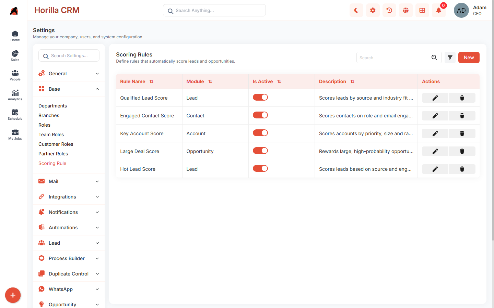
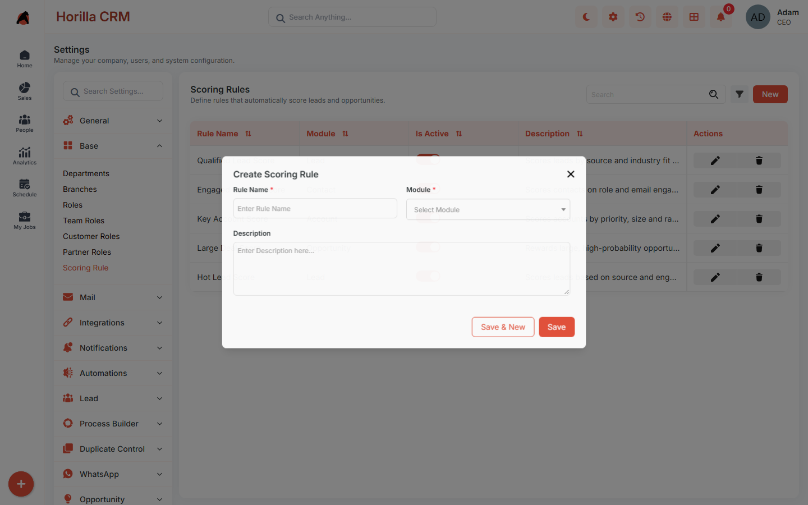
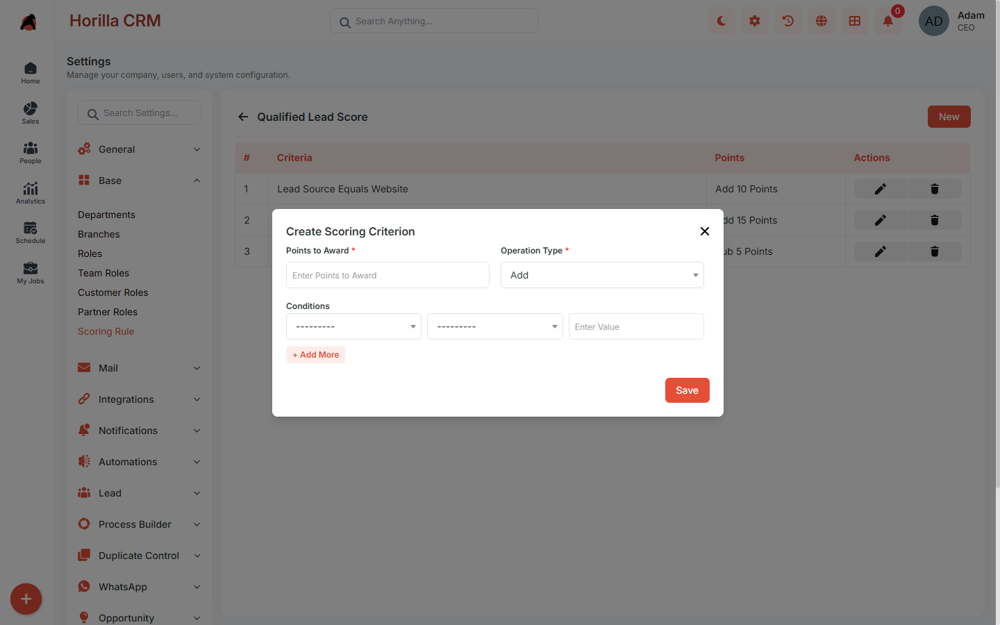
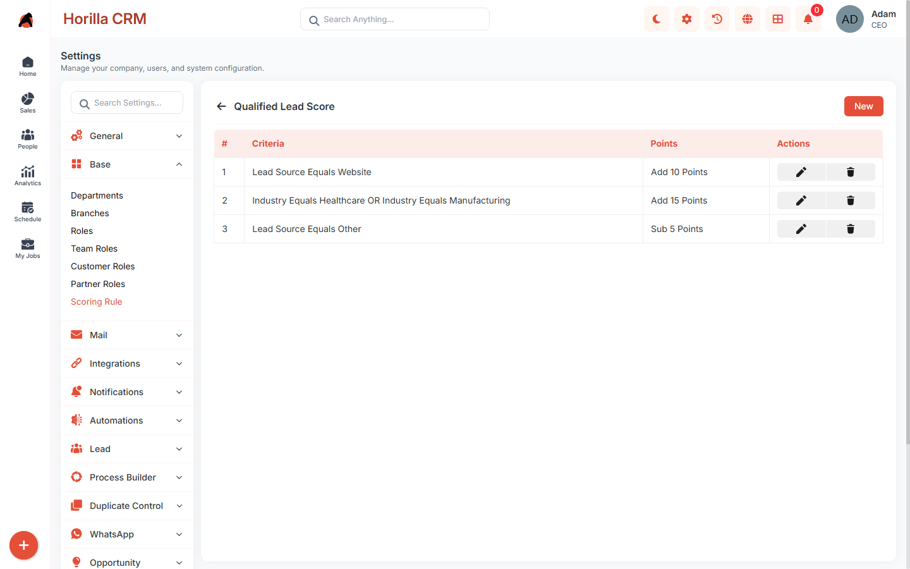

Introduction
Scoring Rules let an organisation assign weighted points to records in the Leads and Opportunities modules. The rule-based criteria help CRM users prioritise high-quality leads and the opportunities most likely to close. A rule can combine multiple conditions and logical operators, and scoring can be either additive or subtractive.
Key Features and Functionalities
Accessing Scoring Rules
Path: Settings → Base → Scoring Rules. Administrators can view, create and manage scoring rules across modules.
1. Scoring Rules list view
All created rules are shown in a table.
| Column | Contents |
|---|---|
| Rule Name | Name given to the rule. |
| Module | Lead or Opportunity. |
| Is Active | Whether the rule is currently in use. |
| Description | Description of the rule. |
| Actions | Row-level actions. |
- Edit an existing rule.
- Delete a rule.
- Activate or deactivate a rule with a toggle.
- Search and filter to find rules quickly.

2. Create a new scoring rule
- Click New to open the creation form.
- Enter the rule details.
- Click Save.
| Field | Description |
|---|---|
| Rule Name | A unique name for the rule. |
| Module | Lead or Opportunity. |
| Description | A meaningful description of what the rule does. |
| Is Active | Turns the rule on or off. |

3. Add rule criteria
- Click the rule to open its Rule Detail View.
- Click New to add criteria.
- Configure the criteria fields.
- Optionally click + Add More to add further conditions.
- Click Save.
| Field | Description |
|---|---|
| Points to Award | Numeric value of the score. |
| Operation Type | Add or Subtract. |
| Field | A field belonging to the module. |
| Operator | A comparison operator such as Equals, Contains or Greater Than. |
| Value | The value the field is matched against. |
| Logical Operator (optional) | AND or OR, used to combine multiple conditions. |

4. Scoring rule detail view
Clicking a scoring rule opens its detail view, which contains:
- Rule Information: rule name, module, status and description.
- Criteria List: each criterion's fields, operators, values and scoring action.
- Actions: edit a criterion, or delete it.

Benefits
- Automated lead qualification: points are assigned to leads according to business logic.
- Opportunity prioritisation: the opportunities most likely to close stand out.
- Customisable rules: flexible field conditions, operators and scoring logic.
- Improved sales efficiency: effort concentrates on high-potential records.
- Data-driven decisions: leads and opportunities are ranked and filtered objectively.